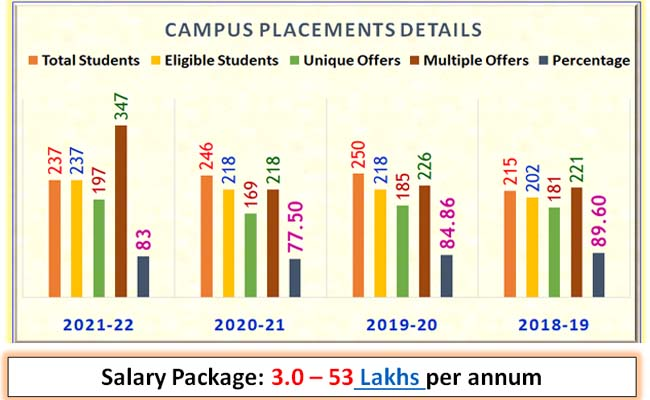

Welcome to Department of Computer Science And Engineering
The Department of Computer Science & Engineering, established in 1986, offers UG, PG and
research (leading to M.Sc. and Ph.D.) programs. The Department practices outcome-based
education since 2014. With state-of-the-art laboratories and other supporting facilities
to provide enhanced learning environment, the Department boasts of well qualified teaching
faculty with rich research, teaching and industrial experience.
The Department has excellent placement track record in reputed industries with an average
of 80 – 85% placement of eligible students over the years. The Department regularly conducts
audit courses, and special courses on advanced topics, to bridge the gap between the
curriculum and the need of the industry. The Department offers M.Tech programs in Computer
Science & Engineering and in Software Engineering (autonomous under VTU) from the
academic year 2003-04 and 2015-16 respectively. From the year 2022-23 M.Tech program is
under Nitte University.
CORE COMPANIES VISITED
Following is the list of core companies from India and Japan visiting NMAMIT, Nitte for placements to the students of the Department of Computer Science & Engineering:
1. Indian Core Companies: • NUTANIX, IBM India Software Labs, MScripts, VMWare, Informatica, Oracle managed cloud services, Siemens Healthcare, Mercedes Benz, Juniper Networks India Pvt Ltd, Robert Bosch, Walmart Labs, Robosoft Technologies, YMedia Labs, ACI Worldwide Solutions Pvt Ltd, Analytics Quotient, Semnox Solutions, 99Games Pvt Ltd, Sony India Software Centre Private Limited, Hashedin Technologies, TEKsystems Global Services Private Limited, Avysh, CGI, Exito media concepts Pvt Ltd, Faurecia, SLK Software, Attra Infotech, Netskope, Allegion India Pvt Ltd, Gobal Delight, Medici Technologies Pvt Ltd, Brillio, Invenger Technologies, SpurTree Technologies, Rubik India Private Limited, EVIVE Software Analytics Pvt. Ltd., Loco, Trescon, Niveus Solutions (36 core companies)
2. Japanese Companies
Nidec-Read
AIBOD
Kobayashi create
Yokogawa Electric
Komatsu Kaihatsu Corp
Campus placement details
